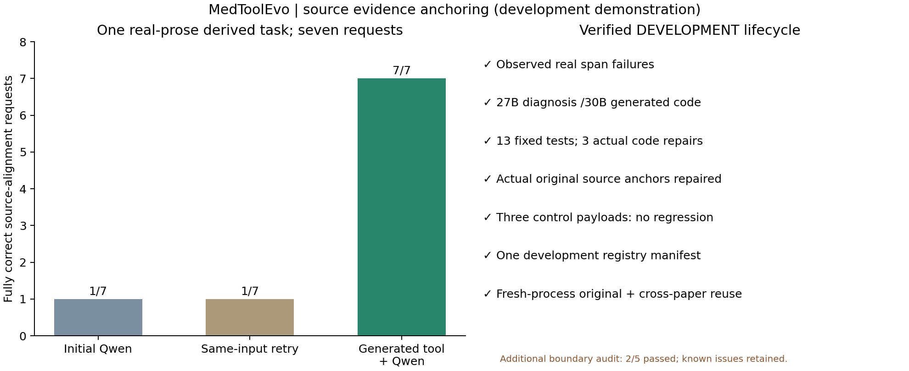

开发级验收通过，完成时间：北京时间2026-11-09 19:36:23。模型固定Qwen3.5-27B负责语义与管理，Qwen3-Coder-30B负责代码。原文、初始回答、测试和候选代码没有人工改写。
本例从DocHopQA条目9152所附论文PMC11872689的Results正文构造工程任务，原始文本1,424个Unicode字符，7个定位请求，其中6个有源支持、1个为明确不存在的符号探针。源正文逐字保留；问题、查询短语、规范化规则、坐标定义和验收由研究者预先固定。它不是原DocHopQA/BioASQ题，也不是医学答案正确率实验。
来源：Effects of Vitamin D Supplementation on Blood Pressure in Patients With Type 1 Diabetes Mellitus: A Systematic Review of Clinical Trials，DOI10.1002/hsr2.70524。复用来源为另一篇论文PMC11856201，DocHopQA条目9532。只核查文本定位，不推导这些论文的临床结论。
| 定位请求 | 原文出现次数 | 初始 | 同证据重试 | 工具后 |
| studies | 5 | 未通过 | 未通过 | 通过 |
| vitamin D | 2 | 未通过 | 未通过 | 通过 |
| double‐blind | 1 | 未通过 | 未通过 | 通过 |
| hypertension | 1 | 未通过 | 未通过 | 通过 |
| ACEI/ARB medication | 1 | 未通过 | 未通过 | 通过 |
| white European | 1 | 未通过 | 未通过 | 通过 |
| __absent_literal_probe__ | 0 | 通过 | 通过 | 通过 |
一个请求只有在全部出现位置、来源、Unicode字符起止坐标和逐字引文均正确时才通过。坐标相对于每次输入的source.text，从0起计，末端不包含；不是整篇PDF的页码/全局坐标。七个请求不是七道独立医学题。不存在的探针用于检查拒绝能力，不是伪造医学事实。六个正向请求合计11处原文出现。

| 代码版本 | 功能通过 | 功能失败 |
| v001 | 12 | 1 |
| v002 | 12 | 1 |
| v003 | 12 | 1 |
| v004 | 13 | 0 |
实际自动代码修复3次。失败为Unicode全角字符与连续空白折叠后的原始坐标映射错误，v004通过13/13。全部版本及同一测试哈希保留，无人工源码修补。
前置v1在契约生成阶段出现非法嵌套Schema及真实输出截断，候选代码尚未生成即保存停止。v2改为控制器附加已固定的Schema，Qwen只编译算法；随后Qwen填写的合成测试期望坐标三轮仍有错误，按规则拒绝，仍无候选代码。v3保留这些Qwen设计输入，并加入原先CPU预检的5个边界例，由独立规则程序计算期望值后冻结13个测试，才交给Coder。
题目、原文、规范化定义、I/O、原任务参考程序、控制与开发准入标准保持一致。v3只复用完整请求指纹一致的原始初答、重试、Manager及算法编译调用，没有重挑更差基线；复用源文件与哈希见reused_observations.json和reused_algorithm.json。旧失败、修订和费用均保留。测试期望值构造方式与13项覆盖是新版本明确记录的协议改动，不把它写成旧v2测试已通过。
| 已完成案例 | 新生成的能力 | 验收单位 |
| 论文表格加权计算 | 加权均值、方差等确定性数值处理 | 单题4个数值 |
| 本例：正文证据定位 | Unicode规范化后的全部匹配、原文位置反向映射、无来源拒绝 | 单题7个定位请求 |
前置引用索引探索没有跑通：Manager暂缓构建，已保留原始失败记录。事后只去掉已声明来源的重复前缀，第二份正文的23/23组成员即一致，说明原0/23主要是ID表示差异；该审计不改原评分、不计为工具修复。研究数量与字面引用区间的源内差异也保持未解决。
本次过程的所有失败用于问题归档；不报告“尝试都成功”。两个开发成功案例不能相加成统一F1、正式稳定注册或100题验收。正式100题及1130题仍独立，只有100题完成且验收通过才允许启动全量。
在冻结案例通过后，源码检查提示坐标映射和额外字段校验可能不完整，因此另用5个固定CPU探针复测，结果2/5通过。两种“连续空白出现在匹配词前”的输入未正确返回位置；函数本体也未拒绝额外顶层字段。正常ASCII和全角字符正向探针通过。带Schema的调用边界会阻止额外字段，但函数本体仍未完全兑现契约。
这份事后检查独立保存于posthoc_boundary_audit.json，不改旧13项测试及case_acceptance，不作为新的医学结果。当前工具保持开发级，不能据有限验收宣称对任意文本可靠。残余问题进入统一修复清单，下一冻结版本需带着这些反例复测，而不能只重复成功例。
源正文SHA256：c627aa1ad4eff8518ded0221929b1d360cb84f66c684423bba3df771138fd491。独立原文坐标参考从未发送给初始Executor、Manager、Compiler或Builder；合成测试的离线纠错仅涉及虚构小输入。